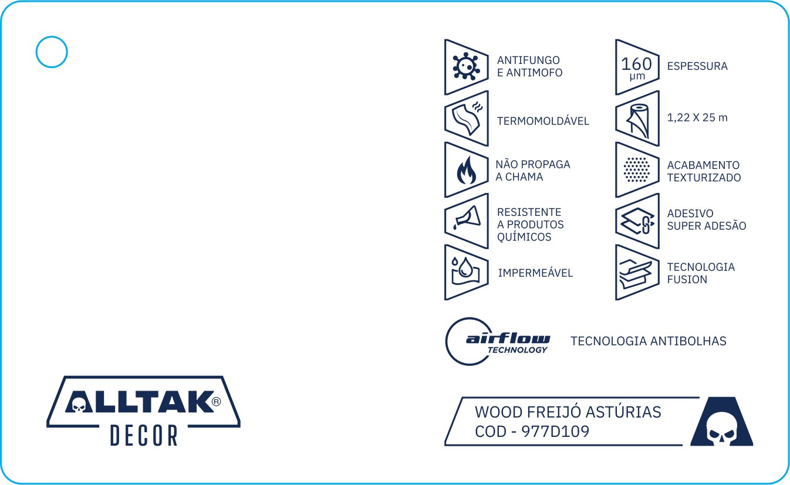
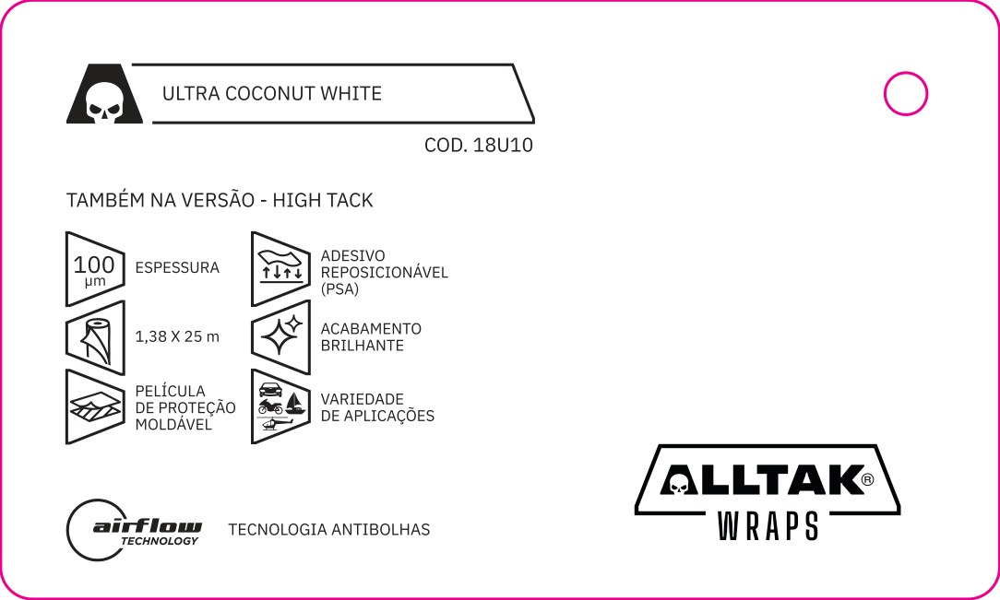
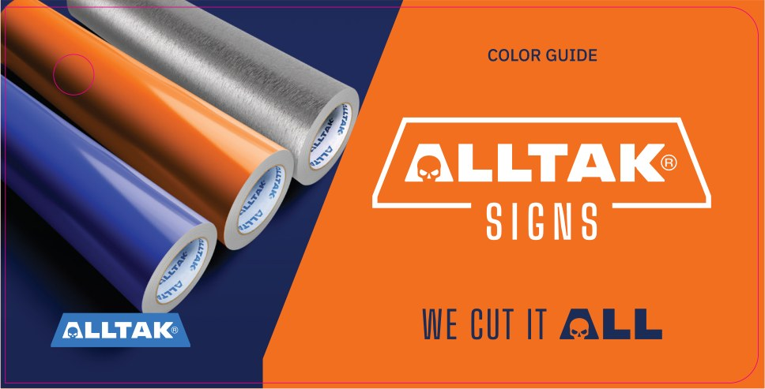

O contrato ativo já tem preço travado, capa impressa e fila de produção. Terminá-lo até março é o caminho mais barato para chegar à entrega mensal que vocês querem, já em abril.
Pela primeira vez a Alltak tem catálogo chegando com regularidade. Catálogo é vitrine: é ele que coloca o produto na mão de quem vende.
A primeira fase cobrou aprendizado dos dois lados: ajuste de máquina, perda nos substratos mais porosos, ano eleitoral na gráfica e bobinas fora do cronograma.
(01) Onde estamos
O catálogo chegou. Agora faltaterminar.
Decor
16.736a entregar, de 30.000
Wraps
30.000nenhuma bobina recebida
Sign
15.000a entregar, de 30.000
Book
Concluído4.940 de 5.000
EntregueA entregar
HojeFaltam 61.736 catálogos. Os 1.736 do Decor estão prontos desde setembro, só esperando lâmina, e as capas já estão impressas.
Fonte: controle de entregas 75 LAB e reunião com a gráfica, 28/10/2026. O acordo inclui 60 unidades restantes do Book, fora desta conta.
×
(02) O que vocês pediram
A intenção é certa: previsibilidade. O caminho é que sai caro.
Levamos cada ideia para a gráfica. A resposta:Clique para ver a conta de cada ideia
Fonte: gráfica, reunião de 28/10/2026; arquivos de produção dos catálogos 2026.
×
(03) As dúvidas
E as dúvidas? A gráfica respondeuuma a uma.
PerguntaRespostaA favorAtenção
Dúvida 1A mesma máquina faz todos os catálogos?
Não: são duasDecor em uma; Sign e Wraps em outra.
O Decor anda em paralelo com os outros dois modelos.
Sign e Wraps dividem a mesma máquina: um lote espera o outro terminar de imprimir.
Dúvida 2Qual é o processo de produção?
Lote inteiro, depois manuseioImprime, intercala em bases de 4, refila, monta e embala.
Linha contínua: menos perda, menos ajuste de máquina e acabamento mais rápido.
Precisa da bobina do lote antes de começar. Rolo que chega aos poucos trava a linha.
Dúvida 3Tem espaço para todo o volume de bobinas?
SimGalpão novo, perto da gráfica.
Time dedicado de 3 a 4 pessoas e impressora nova de cama plana para os materiais da Alltak.
Nenhuma. O que pesa é material pronto parado, que ocupa espaço e se desgasta.
Dúvida 4Quantos catálogos saem por bobina, já com descarte?
1.326 por bobinaBobina de 25 m. No Decor, 250 m por cor fecharam 13.264.
A conta saiu das notas de bobina: agora dá para pedir bobina por catálogo, sem chute.
Para 15 mil por cor são 12 bobinas, não 10. Wraps só tem número quando a primeira bobina rodar.
Fonte: gráfica, reunião de 28/10/2026; notas de remessa de bobina da Alltak, abril a junho de 2026.
×
(04) Quanto rende a bobina
Uma bobina de 25 m, 1.326 catálogos Decor.
104
Coresno catálogo Decor, uma lâmina de cada
×
250 m
Por cor10 bobinas de 25 m, em 6 notas de abril a junho
=
13.264
Catálogos completosa primeira leva parou aqui, quando a bobina acabou
÷ 10 bobinas
1.326
Por bobina de 25 m53 catálogos por metro de bobina
Teórico e real, por bobina
Teórico, sem perda
1.932
Real, com o descarte
1.326
69%
de aproveitamento. O resto fica no acerto de máquina, no refile e na perda dos substratos mais porosos.
Teórico: lâmina de 15,5 × 9,5 cm, 12 por linha na largura de 1,22 m, 161 linhas em 25 m.
Quanto pedir de bobina, por cor
Agora · fechar os 1.736
2 bobinas
Uma bobina de 25 m rende 1.326. Para 1.736 são 33 m: vale a segunda bobina, e a sobra entra no lote atual.
Fechar 15.000 catálogos
12 bobinas
A primeira leva veio com 10 e parou em 13.264. Faltaram 2.
Novo lote · 2.500 por mês
2 por mês
Um rolo e nove décimos, arredondado para cima.
Novo lote · 30.000 por ano
23 bobinas
Por cor, no ano. Com 104 cores, cerca de 2.350 bobinas.
Fonte: notas de remessa para industrialização da Alltak para a 75 LAB, abril a junho de 2026: 6 notas autorizadas, 104 cores Decor, 25.990 m e 1.001 rolos, contra 13.264 catálogos Decor entregues. Rendimento do Sign e do Wraps fecha na mesma conta quando o lote rodar inteiro.
×
(05) O momento
Este é o pior momento para reabrir o saldo.
+8,4%
Dólar em duas semanas, de R$ 5,04 para R$ 5,46. Parafusos e insumos importados acompanham.
Dissídio · mão de obra+10%
Em vigor na gráfica desde setembro. Não foi repassado ao contrato ativo, e mão de obra é o que mais pesa no catálogo.
Imposto · CBS em 202711,3%
Referência calculada pelo TCU. PIS e Cofins saem em 1º de janeiro e o Senado só fixa a alíquota até 15/12. Por isso o novo lote se negocia depois dessa data.
Juros · Selic13,75%
Dinheiro caro para quem carrega estoque, e janeiro ainda abre com mandato novo em Brasília.
Fontes: Banco Central, PTAX venda, 02/01 a 05/11/2026, e meta Selic; TCU, 28/10/2026; LC 214/2025; gráfica, reunião de 28/10/2026 (dissídio). Inflação: IPCA de 4,58% em 12 meses até setembro.
×
(06) Ideia 1 · Zerar o contrato
Zerar troca um preço travadopor um preço em aberto.
Contrato ativo · 61.736 catálogos
R$ 1.193.490
Preço de março mantido até o fim
Capas de todo o saldo já impressas
Dissídio de setembro não repassado
Formatos aprovados, sem refazer nada
Se o saldo for reorçadoArraste para simular
+ R$ 229.150
com 19,2%
a mais pelos mesmos 61.736 catálogos, antes dos novos.
0%IPCA 4,58%Dissídio 10%Dissídio e dólar 19,2%25%
+ R$ 54.662só a inflação, 4,58%
+ R$ 119.349dissídio da mão de obra, 10%
+ R$ 229.150dissídio e dólar juntos, 19,2%
E se o formato mudar+ R$ 331.000
de capas e material já produzidos para o saldo. Com outro formato eles não servem, e a conta precisa ser paga do mesmo jeito.
Zerar e mudar o formato+ R$ 560.150
Simulação sobre o valor do saldo a preço de hoje. Dissídio e dólar juntos: 10% de mão de obra e 8,4% de dólar aplicados em sequência. O reajuste real depende do orçamento da gráfica, ainda não feito.
×
(07) Ideia 2 · 2.500 por mês
Zerar em janeiro não adianta nenhuma entrega.
Abril
é quando sai a primeira entrega mensal se o contrato novo começar com bobina em janeiro. O ritmo funciona, mas só depois do tempo de produção.
JaneiroBobina chega
Jan a marImpressão do lote por máquina
Fev a marManuseio e acabamento
A partir de abril2.500 por modelo, mês a mês
Lote antes de ritmo
A gráfica imprime todo o lote de um modelo e só depois monta. Decor em uma máquina, Sign e Wraps em outra.
10.000 na primeira remessa
Com rolo para cerca de 10 mil catálogos a produção gira. Com rolo para 2.500, a janela fica grande demais.
Abril vale para o novo lote
Janeiro a março viram o setup do novo lote. Em abril a recorrência que vocês pediram começa, com o lote atual já entregue.
Fonte: gráfica, reunião de 28/10/2026. Prazo estimado a partir da chegada da bobina.
×
(08) Ideia 3 · Formato único
Mudar 90.000 catálogos para caber em um expositor?A conta inverte.

Decor
15,5 x 9,5 cm · a linha pontilhada
1xconsumo igual ao de hoje

Wraps
12,5 x 7,5 cm · hoje
1,6xmais bobina por lâmina

Sign
11,2 x 5,7 cm · hoje
2,3xmais bobina por lâmina
A bobina é da AlltakPara a gráfica muda pouco. Quem paga o adesivo a mais é a Alltak.
Menos lâminas por folhaMais capa, mais impressão e mais hora de máquina em cada lote.
Reduzir também não serveEstampa do Sign perde leitura. O Decor perde espaço de informação.
O problema é o expositor.Trocar o expositor mexe em um lote. Trocar o catálogo mexe em 90.000 unidades e em R$ 331 mil de capas que já estão prontas.
Fonte: área de corte medida nos arquivos de produção dos catálogos 2026, em escala nesta tela; gráfica, reunião de 28/10/2026.
×
(09) Ideia 4 · Manuseio separado
Separar o manuseio é caminho sem volta.
Na mesma linhacomo é hoje
ImposiçãoA folha é montada pensando no acabamento.
ImpressãoSequência certa de imagens por folha.
IntercalaçãoEm bases de 4 lâminas, não uma a uma.
RefileCorte do bloco inteiro, depois o canto.
ProntoParafuso, shrink e caixa, na mesma casa.
Em duas casasgráfica e grupo Alko
ImposiçãoPerde a engenharia voltada ao acabamento.
ImpressãoCada folha sai sem saber quem monta.
RefileLâmina cortada uma a uma, ainda na gráfica.
TransporteMais uma etapa, mais perda e mais prazo.
MontagemIntercalar uma a uma, sem canteadeira.
E depois?
Se não funcionarLâmina refilada não volta para a linha da gráfica. O retrabalho tende a custar mais do que a economia buscada.
Decisão com númeroA gráfica abre o custo por etapa no contrato novo. Com preço com e sem manuseio na mesa, a Alltak decide olhando a conta.
Fonte: gráfica, reunião de 28/10/2026. Estudo de custo por etapa em andamento.
×
(10) Três caminhos
Três caminhos. Só um dápreço e ritmo.
nov/26dezjan/27fevmarabrmaijunjul
Caminho AO que a Alltak pediu
Material parado
Reorçar, bobina e impressão
7.500 por mês, preço novo
Contrato novo de 90.000: o saldo entra aqui
Preço
Todo o saldo reaberto
Ritmo
Abril de 2027
O que pesa
R$ 55 mil a R$ 229 mil a mais e capas paradas
Caminho BO que o fornecedor trouxe
61.736 no preço de hoje, até março
Novo ciclo, do zero
2027 e 2028 a planejar
Preço
Saldo travado
Ritmo
Só depois do novo planejamento
O que pesa
Meses sem contrato depois de março
Caminho C · recomendadoFechar até março, novo lote em abril
Lote atual: 61.736 no preço de hoje
Novo lote: 90.000 em 12 meses
Fatura 1.736
Negociar
Setup do novo lote
2.500 por modelo, 7.500 por mês
Preço
Lote atual travado; os 1.736 prontos faturam já
Ritmo
Abril de 2027
O que pesa
Lote atual e setup correm juntos até março
Fontes: proposta da Alltak; gráfica, reunião de 28/10/2026; simulação da tela 6. Caminho A considera bobina em janeiro. Prazos dependem da chegada das bobinas.
×
(11) Próximo passo
Fechamos até março?
Os 1.736 do Decor estão prontos há dois meses e faturam já. O lote atual ganha dois meses além do calendário original. Em dezembro negociamos o novo lote, de janeiro a março fazemos o setup e, em abril, começa a entrega regular que vocês pediram.
 ×
×